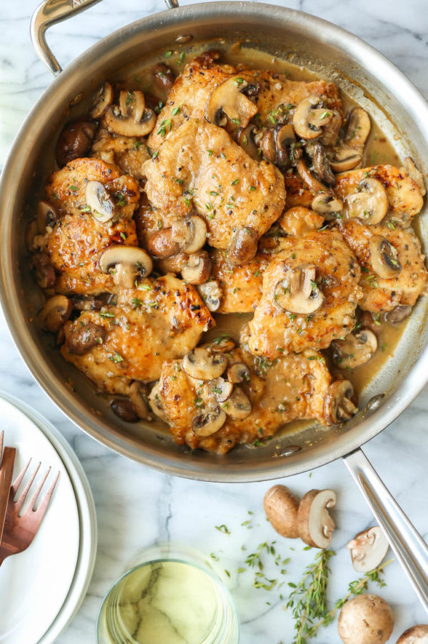

Chicken and Mushrooms

Garlic mushroom chicken thighs is a quick throw together chicken recipe all cooked in one pan!
Golden seared chicken thighs with mushrooms is the weeknight dinner everyone raves about! The perfect dinner when your faced with minimal ingredients and no time.
Ingredients
- chicken thighs, boneless.
- salt and ground black pepper to taste
- 2 Tbsp olive oil
- 8 ounces fresh mushrooms, sliced 1/4 inch thick
- 1 pinch salt
- ½ cup water
Steps
- Preheat oven to 400 degrees F.
- Season chicken on all sides with salt and ground black pepper.
- Heat olive oil over medium-high heat in an ovenproof skillet.
- Place chicken in skillet and cook until browned, about 5 minutes.
- Turn chicken over; stir mushrooms with a pinch of salt into skillet. Increase heat to high; cook, until mushrooms shrink slightly, about 5 minutes.
- Transfer skillet to the preheated oven and cook until chicken is no longer pink in the center and the juices run clear, 15 to 20 minutes.
- Transfer chicken to a plate and loosely tent with foil; set aside for about 10 minutes.
- Season with salt and pepper. Spoon mushroom sauce over chicken and serve.
back to main page